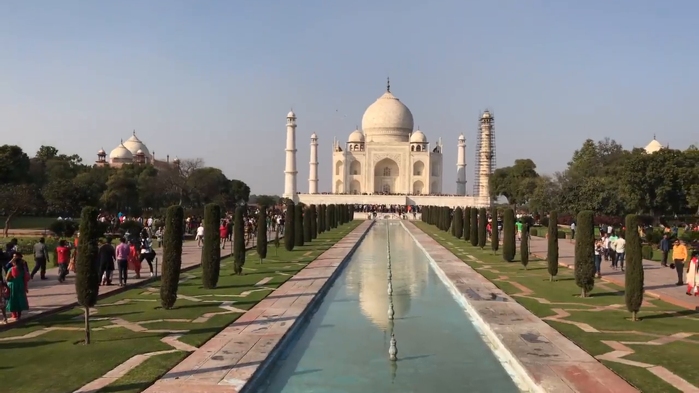

**Structure From Motion**
Student name: Aditya Gaddipati
# Baseline Reconstruction
| View 1 | View 2 |
| ----------- | ----------- |
| | |
Implementation details:
1. The first step is to get the inliers from the given noisy correspondances. This is done using RANSAC.
2. Seven points are sampled randomly and the fundamental matrix is obtained using the 7 point algorithm.
3. Next, the number of inlier points are counted for the calculated F matrix.
4. This is repeated for a few iterations until the best inlier points are obtained.
5. Then using the inlier points, the F matrix is obtained from the 8 point algorithm.
6. Next, the essential matrix E is calculated using the fundamental matrix and the intrinsics.
7. The essential matrix is decomposed using SVD. Assuming canonical form of the first camera, four possible camera matrices are obtained for the second camera as follows:
8. The 3D points are triangulted using all four camera configurations and the correct one is chosen based on the maximum number of points that lie in front of both the cameras.
# Incremental Structure-from-Motion
| Camera 1 & 2 | Adding Camera 3 | Adding Camera 4 |
| ----------- | ----------- | ----------- |
| | |
Implementation details:
1. First, we do a baseline reconstruction using cameras 1 & 2. The steps are similar to what was described above.
2. Next, we want to add the camera 3 to the SFM pipeline. To do so, we first find the common correspondances between cameras 1 & 3 and cameras 2 & 3.
3. Using the 3D points of the common correspondances we get the 2D-3D correspondances for camera 3 and calculate its projection matrix.
4. Using the caluculated projection matrix, new points are triangulated between cameras 1 & 3 and cameras 2 & 3 and added to the 3D reconstruction.
5. The above procedure is repeated for adding camera 4 to obtain the final 3D reconstruction using all 4 cameras.
# Reconstruct your own Scene
| Image 1 | Image 2 | Image 3 |
| ----------- | ----------- | ----------- |
|  | | |
| Image 1 | Image 2 | Image 3 |
| ----------- | ----------- | ----------- |
| | | |
 |
|  |
|  Implementation details:
1. First, we do a baseline reconstruction using cameras 1 & 2. The steps are similar to what was described above.
2. Next, we want to add the camera 3 to the SFM pipeline. To do so, we first find the common correspondances between cameras 1 & 3 and cameras 2 & 3.
3. Using the 3D points of the common correspondances we get the 2D-3D correspondances for camera 3 and calculate its projection matrix.
4. Using the caluculated projection matrix, new points are triangulated between cameras 1 & 3 and cameras 2 & 3 and added to the 3D reconstruction.
5. The above procedure is repeated for adding camera 4 to obtain the final 3D reconstruction using all 4 cameras.
Implementation details:
1. First, we do a baseline reconstruction using cameras 1 & 2. The steps are similar to what was described above.
2. Next, we want to add the camera 3 to the SFM pipeline. To do so, we first find the common correspondances between cameras 1 & 3 and cameras 2 & 3.
3. Using the 3D points of the common correspondances we get the 2D-3D correspondances for camera 3 and calculate its projection matrix.
4. Using the caluculated projection matrix, new points are triangulated between cameras 1 & 3 and cameras 2 & 3 and added to the 3D reconstruction.
5. The above procedure is repeated for adding camera 4 to obtain the final 3D reconstruction using all 4 cameras.
 | Image 1 | Image 2 | Image 3 |
| ----------- | ----------- | ----------- |
| | | |
| Image 1 | Image 2 | Image 3 |
| ----------- | ----------- | ----------- |
| | | |